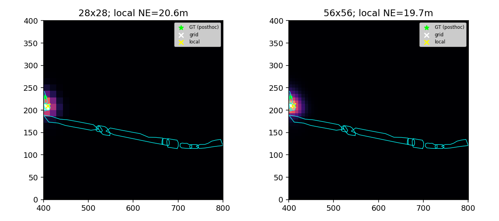
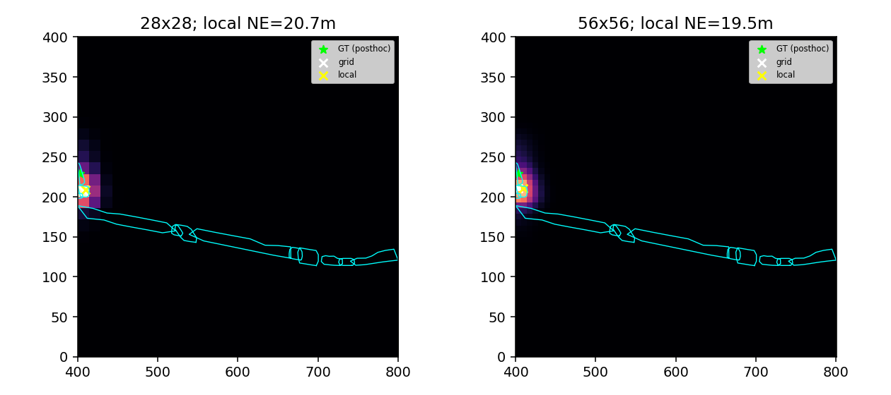
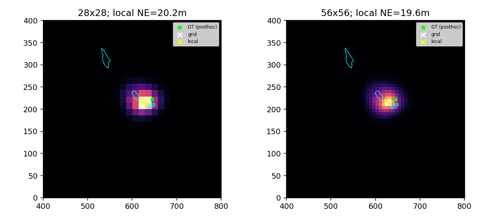
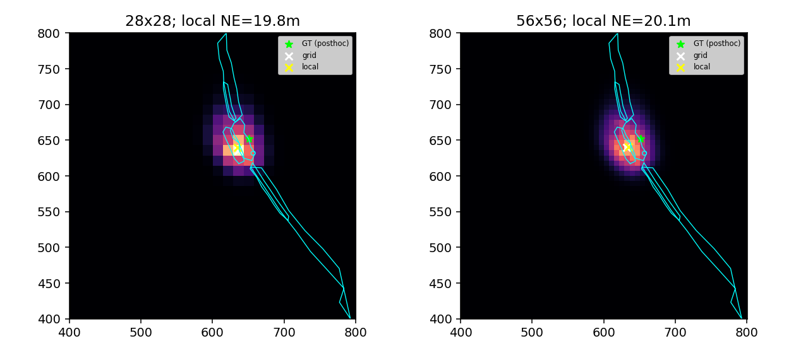
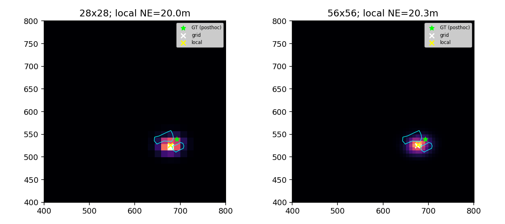
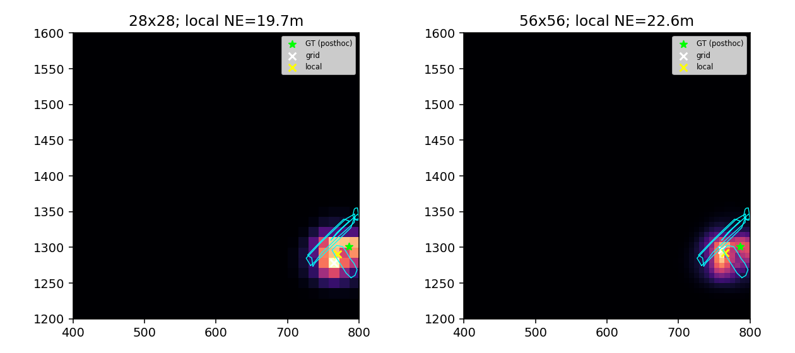

Public polygons: cyan; GT scoring marker: green; grid goal: white; local goal: yellow. No RGB or navigation experiment.
A building with white roof situated behind the building named Causewayside. The road in front of the building is The Fen Causeway.

The gray building behind the Causewayside building on the Fen Causeway.
A multi-colored beige and Brown building with a gray roof cut off by the edge of the map, next to the causewayside building off the fen causeway

The small brown building by the Crusoe Bridge across the River Cam from the Boathouse.

The gray reddish building on Trumpington Street across from the Pitt Building.

The building with the flat roof that is in between Peterhouse Chapel and Little St. Mary's Church

The large green lawn to the left of Cloister Court on Jesus Lane.

The large green lawn to the left of Cloister Court on Jesus Lane.